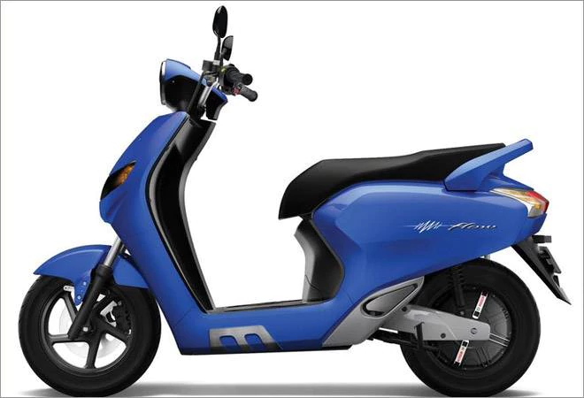
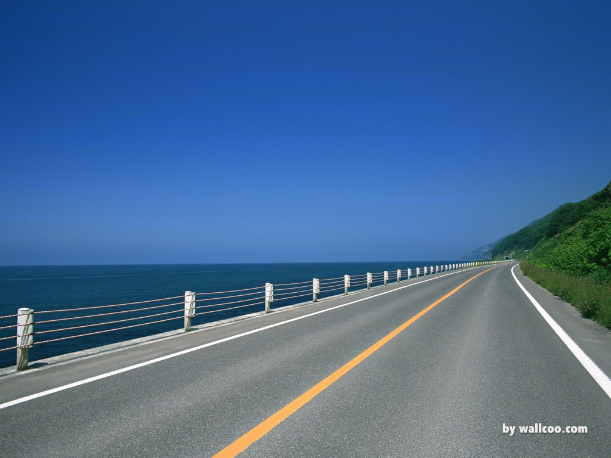

Traffic difference
每個國家的差異除了文化和食物，還有交通，造成兩地交通不同有一個很大的原因，就是國土面積，馬來西亞大了台灣9倍多呢!所以導致了交通的習慣也有所不同喔!
馬來西亞的土地非常大，一般時候不會走路到達目的地，而是用汽車代步，只要出了門，就會開車。台灣由於大眾交通非常發達，大部分的地點都能坐捷運到達，所以比起馬來西亞，更多人選擇走路出門!
只要來到了台灣，沒有人沒看過所謂的"機車瀑布"，尤其是下班的尖峰時段更是擠到不行! 馬來西亞就很少機車了，而且聽說要小心騎機車的馬來西亞人，因為常常會被搶包包喔~
台灣是左邊駕駛，靠右走，馬來西亞則是跟台灣完全相反，所以行人在過馬路的時候也必須更加注意，不要只看習慣的方位才不會發生危險喔!
